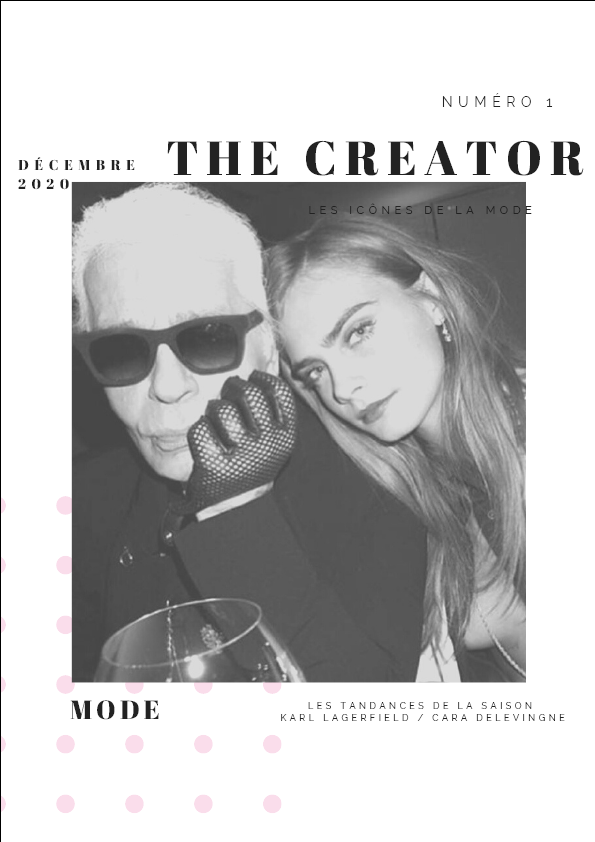
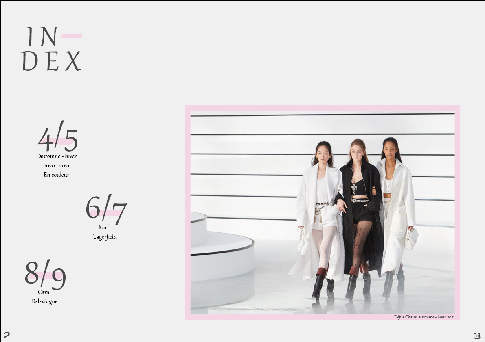
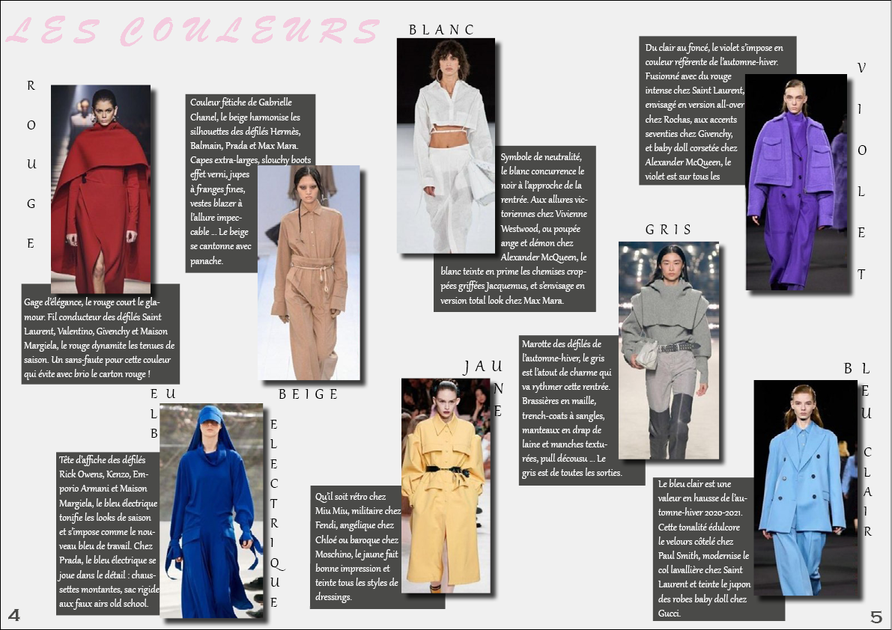
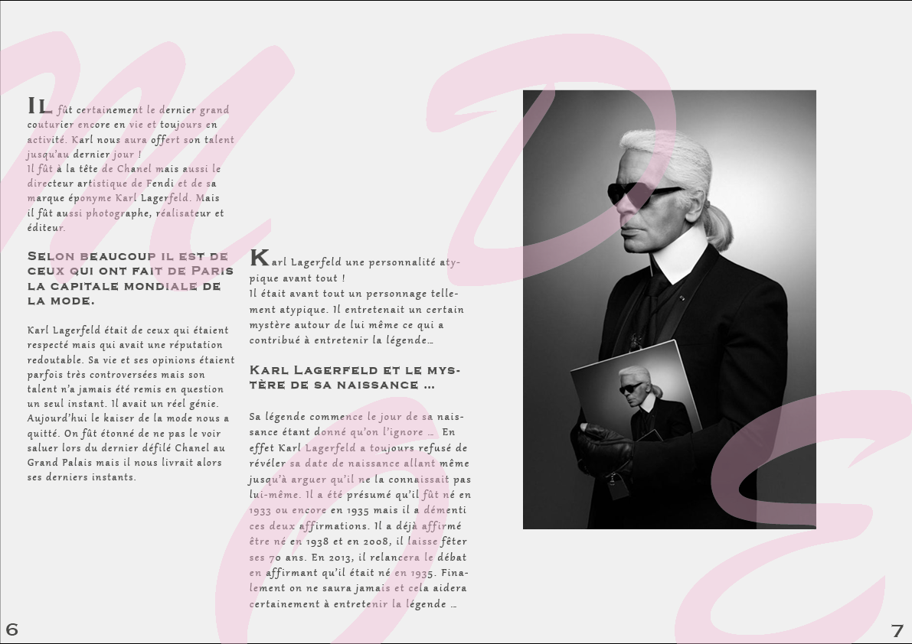
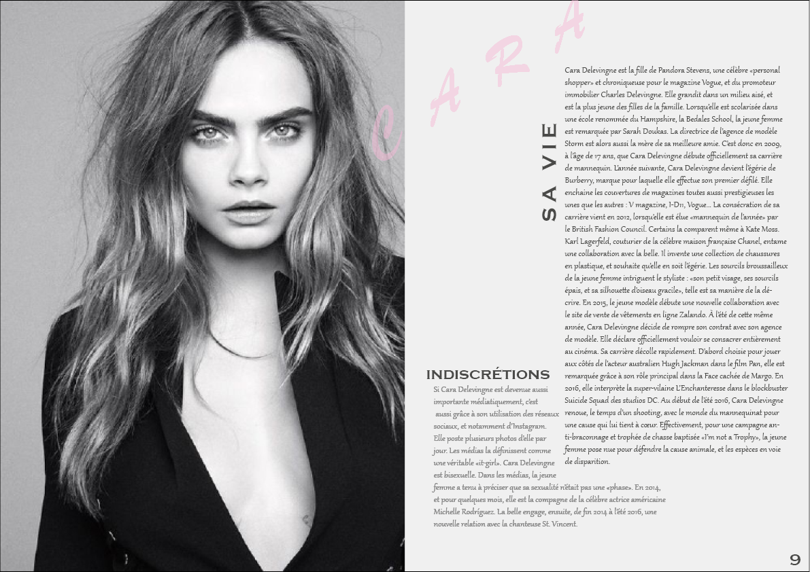
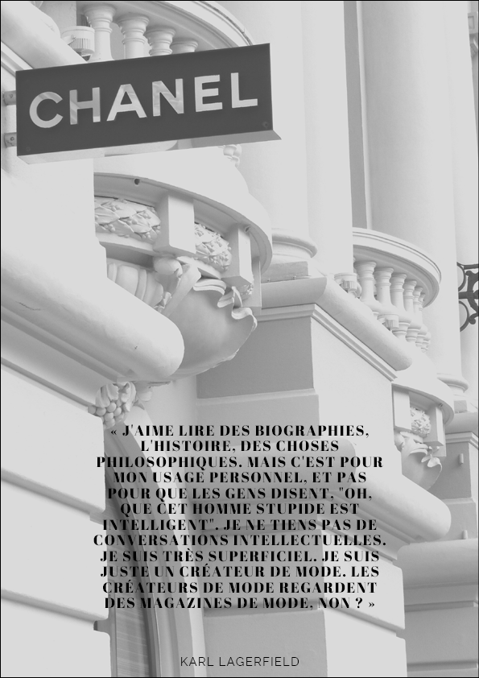
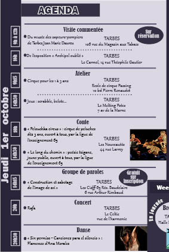
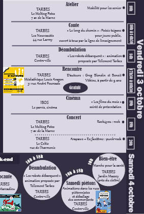

Collection de bière "Sucker Punch"
J'ai réalisé ce projet dans le cadre de ma scolarité.
L'objectif étant de créer le packaging d'une bouteille de bière, j'ai décidé de créer des bières associées à mon film préféré,
"Sucker Punch" en reprenant chaque personnages principaux de ce film.
Pour parvenir à cela, j'ai utilisé le logiciel Photoshop.
Champignons

J'ai réalisé ce projet dans le cadre de ma scolarité.
L'objectif de ce projet était de partir d'un champignons basique, et de finir par reproduire un personnage connu, qu'il soit imaginaire ou bien réel.
Pour parvenir à cela, j'ai utilisé le logiciel Illustrator.
Magazine
     J'ai réalisé ce projet dans le cadre de ma scolarité.
La demande finale concernant ce projet était de fournir un magazine, avec le thème de notre choix.
Je suis particulièrement intéressée par la mode, c'est donc pour cela que j'ai réalisé ce magazine.
Pour parvenir à cela, j'ai utilisée le logiciel InDesign, ainsi que Photoshop.
Agenda de Tarbes
 J'ai réalisé ce projet dans le cadre de ma scolarité.
L'objectif de ce projet était de réorganiser complètement deux pages de l'agenda 2020 de Tarbes.
Le logiciel utilisé pour ce projet est InDesign.